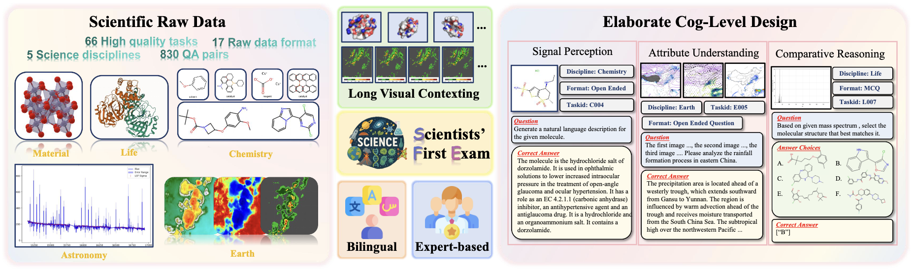
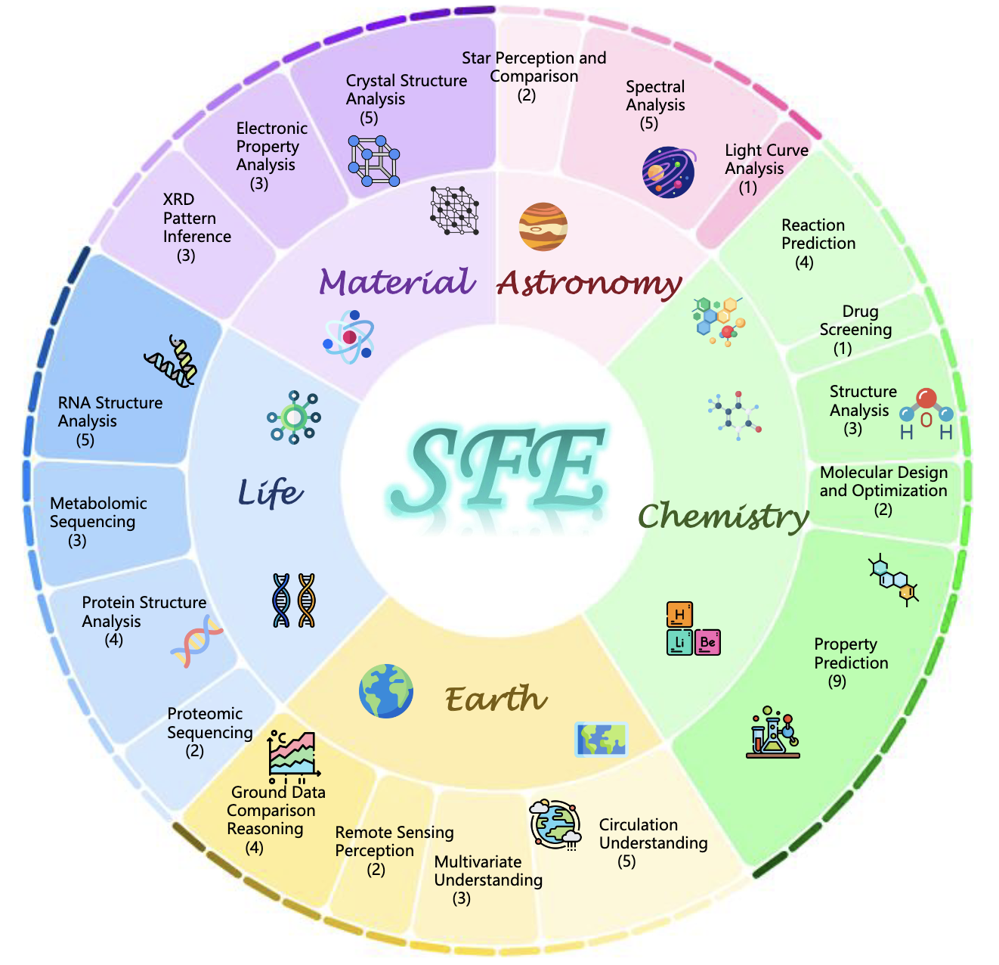

Scientists' First Exam
Probing Cognitive Abilities of MLLM via Perception, Understanding, and Reasoning
830 QA Pairs
66 Tasks
5 Disciplines
3 Cognitive Levels
Probing Cognitive Abilities of MLLM via Perception, Understanding, and Reasoning
Scientific discoveries increasingly rely on complex multimodal reasoning based on information-intensive scientific data and domain-specific expertise. Current scientific benchmarks mostly focus on evaluating the knowledge understanding capabilities of MLLMs, leading to an inadequate assessment of their perception and reasoning abilities. SFE is designed to evaluate the scientific cognitive capacities of MLLMs through three interconnected levels.


5 disciplines, 18 scientific directions, and 66 tasks.
Characterizes the capacity to discern critical components within visualizations of scientific raw data.
202 QA PairsDemonstrates the ability to interpret domain-expert knowledge.
503 QA PairsManifests the ability to derive phenomenological insights through structured comparison of multiple scientific visual sources.
125 QA PairsModel performance evaluated using LLM-as-a-Judge (GPT-4o) scoring on a 0-100 scale. English scores shown.
| Model | Type | Astronomy | Chemistry | Earth | Life | Material | Average |
|---|
Evaluation Method: All models are evaluated using LLM-as-a-Judge with GPT-4o-2024-11-20, scoring predictions on a 0-10 scale normalized to 0-100. The benchmark tests scientific perception, understanding, and reasoning across 830 expert-verified VQA pairs with bilingual (EN/ZH) support. Scores reflect English evaluation results. Temperature is set to 0 for all models.
@misc{zhou2025scientistsexamprobingcognitive,
title={Scientists' First Exam: Probing Cognitive Abilities of MLLM via Perception, Understanding, and Reasoning},
author={Yuhao Zhou and Yiheng Wang and Xuming He and Ruoyao Xiao and Zhiwei Li and Qiantai Feng and Zijie Guo and Yuejin Yang and Hao Wu and Wenxuan Huang and Jiaqi Wei and Dan Si and Xiuqi Yao and Jia Bu and Haiwen Huang and Tianfan Fu and Shixiang Tang and Ben Fei and Dongzhan Zhou and Fenghua Ling and Yan Lu and Siqi Sun and Chenhui Li and Guanjie Zheng and Jiancheng Lv and Wenlong Zhang and Lei Bai},
year={2025},
eprint={2506.10521},
archivePrefix={arXiv},
primaryClass={cs.AI},
url={https://arxiv.org/abs/2506.10521},
}